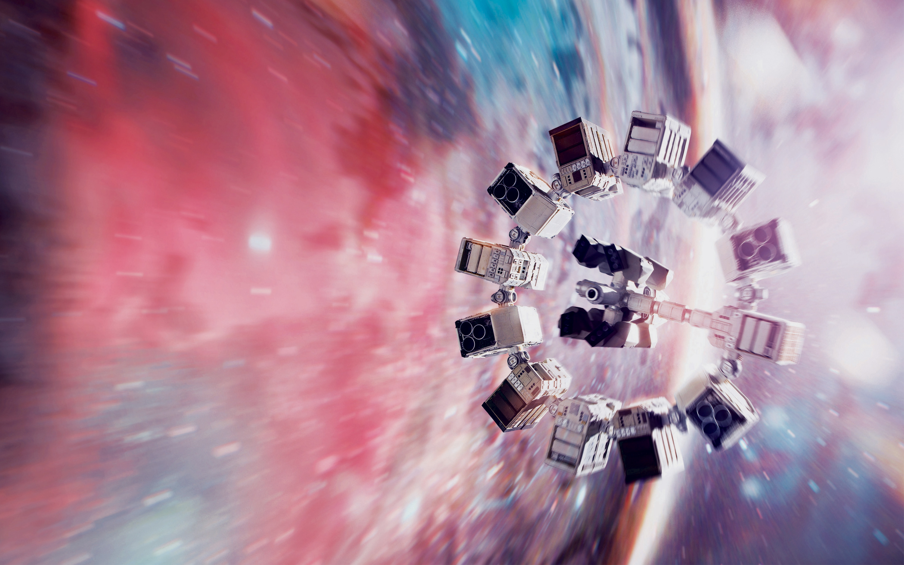
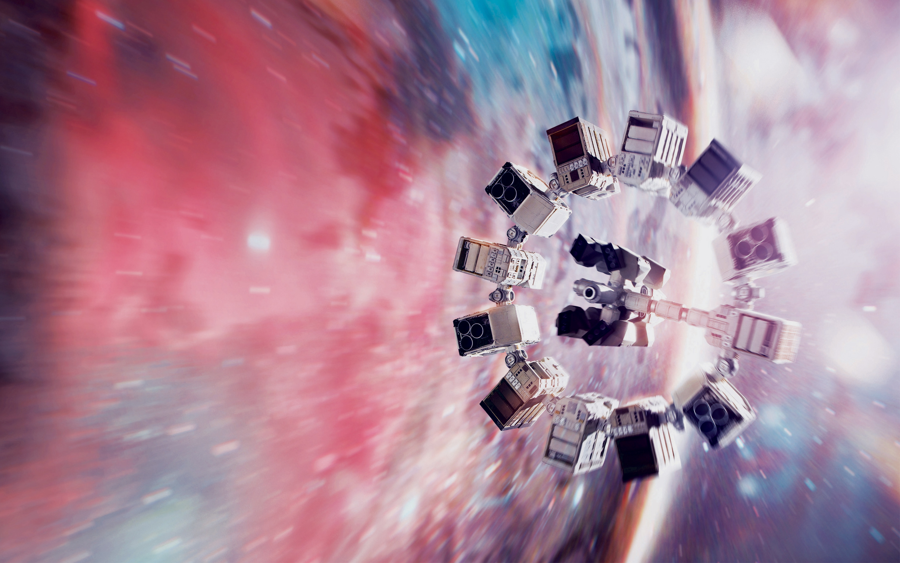

Após ver a Terra consumindo boa parte de suas reservas naturais, um grupo de astronautas recebe a missão de verificar possíveis planetas para receberem a população mundial, possibilitando a continuação da espécie. Cooper é chamado para liderar o grupo e aceita a missão sabendo que pode nunca mais ver os filhos. Ao lado de Brand, Jenkins e Doyle, ele seguirá em busca de uma nova casa. Com o passar dos anos, sua filha Murph investirá numa própria jornada para também tentar salvar a população do planeta